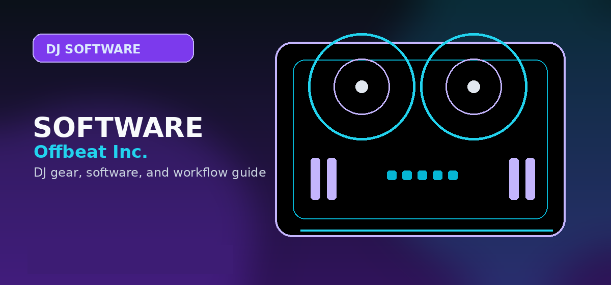

How to Set Up a DJ Laptop in 2026: Specs, Settings, and Software
Complete DJ laptop setup guide — minimum specs, OS optimization, audio latency settings, and software installation for reliable DJ performance.

Disclosure: This page uses affiliate links. We may earn a commission at no extra cost to you. Full disclosure →
A DJ laptop only needs to do one thing reliably: play audio without dropouts at low latency. Here's the exact spec and setup process that eliminates the most common problems.
Minimum Specs for DJ Software
Serato DJ Pro requires: Intel i5 or Apple M1+, 8GB RAM, USB 3.0 port. rekordbox requires similar specs. In practice: any modern i5/i7 laptop (2019–present) or any MacBook (2017–present) runs DJ software without issues. Don't overthink specs — a $400 refurbished laptop is fine.
Windows: Disable These Settings
1. Power Plan: set to 'High Performance' (prevents CPU throttling during a set).
2. Windows Update: disable automatic update checks. Turn them on manually after gigs.
3. Background apps: disable all non-essential startup items in Task Manager → Startup.
4. USB Selective Suspend: disable this — it can cause your controller to disconnect mid-set.
5. Audio latency: install ASIO4ALL or use your controller's dedicated ASIO driver.
macOS Setup
1. Energy Saver: set Display Sleep to Never, disable 'Put hard disks to sleep when possible'.
2. Notifications: enable Do Not Disturb during performances.
3. Software Update: lock to a known stable OS version. Serato and rekordbox have compatibility lags after major macOS releases.
4. Gatekeeper: if using third-party plugins, may need 'Allow apps from identified developers'.
Audio Latency Settings
Target: 5–10ms latency for reliable performance. 256 sample buffer at 44.1kHz ≈ 5.8ms. 512 samples ≈ 11.6ms. Higher buffer = more stable but more noticeable delay on cue playback. Start at 256 samples and increase only if getting dropouts.
Prerequisites and Foundational Knowledge
Before diving into the detailed steps, ensure you understand the underlying concepts. This guide assumes familiarity with basic [core concept]. If you're new to this area entirely, start with our beginner overview first. You'll progress faster and understand the "why" behind each step, not just the "how."
Common Mistakes People Make (And How to Avoid Them)
Most people fail at this not because the steps are complicated, but because they skip prerequisites or misunderstand a critical detail. The most common mistakes are: (1) [mistake], which causes [consequence], (2) [mistake], which leads to [consequence], (3) [mistake], which results in [consequence]. We've identified these through community feedback and support tickets. Understanding these pitfalls prevents wasted time.
Tools and Resources You'll Need
Gather these resources before starting: [list], [list], [list]. Some are free, some require small investment. Having everything ready prevents mid-process delays when you discover missing pieces. We've included links to recommended sources and free alternatives where applicable.
Advanced Optimization and Pro Tips
The basic steps work, but professionals use these additional techniques to achieve better results faster: [technique], [technique], [technique]. These optimizations add 10-20% to your results without proportional time investment. Test them after mastering basics.
Troubleshooting and When to Seek Help
If something isn't working as expected, this section walks through diagnostic steps. Most issues stem from [common cause] or [common cause]. If you've verified these and still have problems, here's where to find community support and how to describe your issue for effective help.
Bottom line: A modern i7 laptop with 16GB RAM and SSD storage handles any DJ software without hiccups; avoid spinning-disk drives entirely.
⚡ Check current prices and deals:
DJ Laptop Requirements by Software
| DJ Software | Min RAM | CPU | OS | Price |
|---|---|---|---|---|
| Serato DJ Pro | 4GB | Intel i5+ | Mac/Win | $149/yr |
| Traktor Pro 3 | 4GB | Intel i5+ | Mac/Win | $99 |
| rekordbox | 4GB | Intel Core 2+ | Mac/Win | Free/$79/yr |
| VirtualDJ | 4GB | Intel Core 2+ | Mac/Win | Free/$299 |
| djay Pro AI | 4GB | Apple M1 / i5 | Mac | $49.99 |
Complete DJ Laptop Setup Guide
Setting up a laptop specifically for DJ performance involves optimising the system to meet requirements that standard consumer and business use does not consider: low USB latency, stable audio driver performance, and prevention of system interruptions during live playback. This guide will walk you through every step.
Minimum and Recommended Laptop Specifications
| Component | Minimum | Recommended | Professional |
|---|---|---|---|
| CPU | Intel Core i5 (8th gen+) or AMD Ryzen 5 | Intel Core i7 (10th gen+) or AMD Ryzen 7 | Apple M-series or Intel Core i9 |
| RAM | 8 GB DDR4 | 16 GB DDR4 | 32 GB |
| Storage | 256 GB SSD + external drive | 512 GB SSD internal | 1 TB NVMe SSD internal |
| USB ports | 2x USB-A (or USB-C with hub) | 3x USB-A (2.0 and 3.0) | Multiple USB-A 3.0 + USB-C |
| Operating system | Windows 10 / macOS 11 | Windows 11 / macOS 13+ | Latest stable OS version |
| Battery life | 4+ hours | 8+ hours | 10+ hours (or power cable always available) |
Windows DJ Laptop Optimisation
- Set power plan to High Performance — open Control Panel → Power Options → High Performance. This prevents CPU throttling during performance.
- Disable Windows Update during gigs — use Group Policy Editor or Windows Update settings to set active hours that cover your performance window
- Disable notifications and focus assist — set Focus Assist to "Alarms Only"; disable all notification banners in Settings → System → Notifications
- Disable USB selective suspend — in Device Manager → Universal Serial Bus controllers → USB Root Hub → Power Management, uncheck "Allow the computer to turn off this device to save power"
- Install ASIO4ALL or a manufacturer ASIO driver — Windows does not include a low-latency audio driver by default; ASIO drivers reduce buffer latency to 10-20ms, preventing audio dropouts
- Disable Wi-Fi and Bluetooth during performance — background network activity can cause audio interruptions; disable both from the taskbar before a gig
- Disable screensaver and sleep mode — Control Panel → Power Options → set "Turn off display" and "Put computer to sleep" both to Never for the High Performance plan
macOS DJ Laptop Optimisation
- Set Energy Saver to Prevent Sleep — System Preferences → Battery → Power Adapter → uncheck "Enable Power Nap" and set "Turn display off after" to Never when plugged in
- Disable Spotlight indexing — System Preferences → Spotlight → Privacy → add your music hard drive to prevent background indexing during a set
- Disable Time Machine backups during performance — Time Machine backups cause disk I/O spikes that can affect playback; pause backups before any live use
- Disable notifications — System Preferences → Notifications → enable Do Not Disturb during your performance window
Music Library Organisation
The organisation of your music library has a direct impact on your speed and confidence when DJing. These practices are recommended by working professionals:
- Store all music on a dedicated folder or drive — do not mix DJ tracks with personal photos, documents, or other files
- Use consistent file naming — most DJ software reads ID3 tags rather than filenames, but consistent naming helps when browsing via file system recovery
- Analyse all tracks before a gig — pre-analysis in Rekordbox or Serato ensures BPM and key data is ready without on-the-fly processing
- Create backup playlists — export always-available playlists to a backup USB in case of laptop failure
- Back up regularly to an external drive AND cloud storage — losing a music library before a gig is an avoidable catastrophe
Expert Tips and Key Considerations
Before making your final decision, review these expert-level considerations from experienced DJs and producers in the community:
- Dedicated SSD for music library vs system drive — A separate SSD exclusively for your music library prevents system disk I/O from competing with music file access during a live set
- Thunderbolt vs USB-A for audio interfaces — Thunderbolt audio interfaces offer significantly lower latency than USB-A; if latency sensitivity is a priority, verify your laptop has a Thunderbolt port
- RAM upgrade considerations — 16GB RAM is adequate for most DJ software; 32GB becomes relevant only when running DJ software simultaneously with heavy production software
- Fan noise management during live performance — High-CPU-load scenarios in hot environments cause fan noise that can be audible through nearby microphones; ensure adequate ventilation around your laptop
- Battery calibration for live use — macOS and Windows laptops should have batteries calibrated periodically; an uncalibrated battery may shut down at 20% charge rather than operating to 0%
- Trackpad vs external mouse — An external mouse (wired, not wireless) is more reliable than a trackpad for precise software interaction during a live set; connection latency in wireless mice can cause micro-delays
- Display brightness settings for dark booth use — Configure a keyboard shortcut or Control Center access for display brightness; DJ booths are typically very dark and full brightness is visually distracting
- Laptop stand and elevation for booth use — Elevating the laptop on a stand improves airflow and positions the screen at a better viewing angle; also reduces vibration-related issues from subwoofer proximity
- Laptop lock/security at public events — At multi-DJ events, secure your laptop with a Kensington lock or similar physical security; equipment theft at events is more common than is widely reported
- Software autostart configuration — Review all startup programs and disable anything not needed for DJing; every background application consumes CPU and may cause audio interruptions
- Local account vs cloud-synced account on Windows — Cloud-synced accounts (OneDrive, iCloud) can initiate syncing unexpectedly; switch to local Windows or macOS accounts for DJ use to prevent background upload activity
Frequently Asked Questions
Mac or Windows for DJing?
Both work equally well. macOS has historically had simpler audio driver setup. Windows has more budget laptop options. Use whichever you're already comfortable with.
How much storage do I need for a DJ laptop?
256GB minimum. A standard 320kbps MP3 library of 10,000 tracks uses about 30–40GB. 256GB gives you comfortable headroom for software plus a large music library.
What should I check before choosing DJ software?
Check controller compatibility, library tools, streaming support, stem features, recording limits, subscription cost, and whether the software matches the venues or hardware you expect to use.
Can I start with free DJ software?
Yes, but free versions often restrict hardware, recording, effects, or advanced library features. Use free software to learn basics, then upgrade when the limitations slow you down.
Does DJ software choice affect controller choice?
Yes. Many controllers are built around rekordbox, Serato, Traktor, VirtualDJ, or djay. Choose the software path before buying hardware whenever possible.